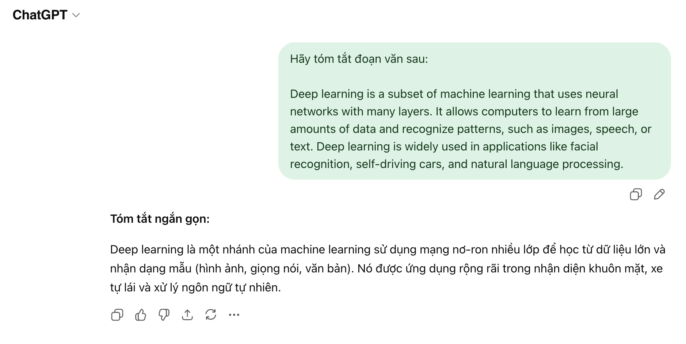
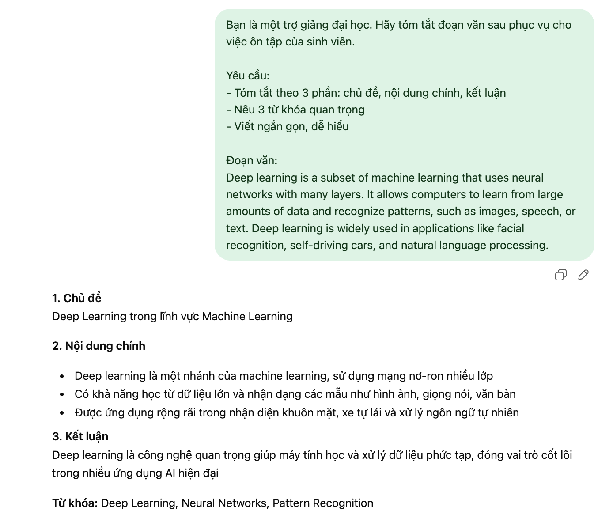

Bài 3: Tổng quan về trí tuệ nhân tạo
BÁO CÁO
Thử nghiệm và phân tích hiệu quả của kỹ thuật viết prompt trong học tập với mô hình ngôn ngữ lớn
1. Mở đầu
Trong những năm gần đây, các mô hình ngôn ngữ lớn như ChatGPT ngày càng được ứng dụng rộng rãi trong học tập. Người học có thể dùng AI để tóm tắt tài liệu, giải thích khái niệm khó, tạo câu hỏi ôn tập, hỗ trợ viết báo cáo hoặc gợi ý ý tưởng học tập. Tuy nhiên, chất lượng câu trả lời của AI không chỉ phụ thuộc vào bản thân mô hình mà còn phụ thuộc rất lớn vào cách người dùng đặt câu hỏi, hay nói cách khác là cách viết prompt.
Prompt có thể hiểu là phần hướng dẫn đầu vào mà người dùng cung cấp cho AI. Nếu prompt quá ngắn, mơ hồ hoặc thiếu mục tiêu rõ ràng thì AI thường trả lời chung chung, thiếu trọng tâm hoặc chưa phù hợp với nhu cầu thực tế. Ngược lại, nếu prompt được thiết kế rõ ràng, có cấu trúc, có ràng buộc cụ thể thì đầu ra thường chính xác, dễ dùng và có giá trị học tập cao hơn. Vì vậy, kỹ năng viết prompt hiệu quả đang trở thành một kỹ năng quan trọng đối với sinh viên trong bối cảnh học tập hiện đại.
Trong báo cáo này, tôi lựa chọn ba tác vụ học tập phổ biến gồm: tóm tắt một bài đọc hoặc tài liệu học thuật, giải thích một khái niệm phức tạp, và tạo bộ câu hỏi ôn tập cho một chủ đề. Với mỗi tác vụ, tôi xây dựng ba mức prompt khác nhau: prompt cơ bản, prompt cải tiến và prompt nâng cao. Sau đó, tôi thử nghiệm các prompt này với công cụ AI và so sánh kết quả để rút ra những nguyên tắc viết prompt hiệu quả.
2. Lựa chọn và phân tích các tác vụ học tập
2.1. Tóm tắt một bài đọc hoặc tài liệu học thuật
Đây là tác vụ rất thường gặp đối với sinh viên. Khi đọc giáo trình, bài báo khoa học hoặc tài liệu học thuật, người học thường cần tóm tắt lại nội dung để nắm được ý chính và phục vụ cho việc ôn tập. Tuy nhiên, việc tóm tắt không đơn giản chỉ là rút ngắn văn bản, mà còn phải giữ được các luận điểm cốt lõi, các khái niệm quan trọng và kết luận chính của tác giả.
Tác vụ này đòi hỏi AI phải hiểu nội dung tương đối tốt, biết phân biệt đâu là ý chính và đâu là chi tiết phụ. Nếu prompt không nêu rõ mục tiêu, AI có thể tạo bản tóm tắt quá ngắn, quá sơ sài hoặc thiếu những phần người học thực sự cần ghi nhớ.
2.2. Giải thích một khái niệm phức tạp
Trong quá trình học tập, sinh viên thường gặp những khái niệm khó như deep learning, xác suất có điều kiện, entropy, blockchain, đạo hàm riêng, hồi quy tuyến tính,... Khi đó, điều người học cần không chỉ là một định nghĩa sách giáo khoa mà là một lời giải thích dễ hiểu, có ví dụ và phù hợp với trình độ hiện tại của mình.
Thách thức của tác vụ này là cùng một khái niệm nhưng có thể được giải thích ở nhiều mức độ khác nhau. Nếu prompt không nêu rõ đối tượng nghe là ai, AI rất dễ trả lời quá học thuật hoặc ngược lại quá đơn giản, không đủ chiều sâu. Vì vậy, đây là tác vụ phù hợp để kiểm tra xem prompt có tác động thế nào đến mức độ dễ hiểu của câu trả lời.
2.3. Tạo bộ câu hỏi ôn tập cho một chủ đề
Một trong những cách học hiệu quả là tự kiểm tra lại kiến thức bằng hệ thống câu hỏi. AI có thể hỗ trợ rất tốt ở việc tạo câu hỏi ôn tập, câu hỏi trắc nghiệm, câu hỏi ngắn hoặc bài tập vận dụng. Tác vụ này hữu ích vì giúp sinh viên chủ động luyện tập thay vì chỉ đọc lý thuyết.
Tuy nhiên, nếu prompt quá chung chung, AI có thể tạo ra các câu hỏi lặp ý, không cân bằng về độ khó hoặc không bám sát phần kiến thức trọng tâm. Vì thế, việc thiết kế prompt trong tác vụ này cần hướng tới tính cụ thể, có giới hạn về phạm vi, số lượng, dạng bài và đáp án.
3. Xây dựng các phiên bản prompt
3.1. Tác vụ 1: Tóm tắt tài liệu học thuật
Prompt cơ bản:<br>“Hãy tóm tắt tài liệu này.”
Prompt cải tiến:<br>“Hãy tóm tắt tài liệu này thành một đoạn khoảng 150–200 từ. Tập trung vào các ý chính, khái niệm quan trọng và kết luận của tác giả. Viết bằng tiếng Việt, dễ hiểu cho sinh viên đại học.”
Prompt nâng cao:<br>“Bạn là một trợ giảng đại học. Hãy đọc tài liệu dưới đây và tạo bản tóm tắt phục vụ cho việc ôn thi của sinh viên. Yêu cầu:<br>(1) Tóm tắt theo 3 phần: bối cảnh/chủ đề, nội dung chính, kết luận;<br>(2) Nêu 3 từ khóa quan trọng nhất;<br>(3) Giữ lại các luận điểm cốt lõi, lược bỏ ví dụ phụ;<br>(4) Sau phần tóm tắt, viết thêm 2 câu ‘điều cần nhớ’;<br>(5) Trình bày ngắn gọn, rõ ràng, dễ hiểu.”
3.2. Tác vụ 2: Giải thích một khái niệm phức tạp
Prompt cơ bản:<br>“Hãy giải thích khái niệm deep learning.”
Prompt cải tiến:<br>“Hãy giải thích khái niệm deep learning bằng tiếng Việt cho sinh viên năm nhất. Trình bày gồm: định nghĩa ngắn gọn, cách hoạt động ở mức cơ bản, một ví dụ thực tế và vì sao nó quan trọng.”
Prompt nâng cao:<br>“Hãy đóng vai một giảng viên khoa học máy tính đang giảng cho sinh viên mới bắt đầu học AI. Giải thích khái niệm ‘deep learning’ sao cho người chưa có nền tảng kỹ thuật vẫn hiểu được. Hãy bắt đầu bằng một định nghĩa ngắn gọn, dùng một phép so sánh đời thường để minh họa, giải thích từ đơn giản đến khó, đưa ra một ví dụ thực tế và kết thúc bằng phần ‘tóm lại trong 2 câu’.”
3.3. Tác vụ 3: Tạo bộ câu hỏi ôn tập
Prompt cơ bản:<br>“Hãy tạo câu hỏi ôn tập về xác suất thống kê.”
Prompt cải tiến:<br>“Hãy tạo 10 câu hỏi ôn tập về xác suất thống kê cho sinh viên đại học, gồm 5 câu trắc nghiệm, 3 câu tự luận ngắn và 2 câu vận dụng. Kèm đáp án ngắn gọn cho từng câu.”
Prompt nâng cao:<br>“Bạn là giảng viên môn Xác suất thống kê. Hãy tạo một bộ 12 câu hỏi ôn tập giúp sinh viên chuẩn bị cho kiểm tra giữa kỳ. Phạm vi gồm: biến cố, xác suất có điều kiện, công thức Bayes, biến ngẫu nhiên và kỳ vọng. Hãy chia thành 3 mức độ: dễ, trung bình, khó. Kết hợp các dạng trắc nghiệm, đúng/sai có giải thích và bài tập ngắn. Mỗi câu phải có đáp án và giải thích ngắn. Cuối cùng, nêu 3 lỗi sai phổ biến sinh viên hay mắc.”
4. Thử nghiệm và so sánh kết quả
Sau khi thử nghiệm với công cụ AI, tôi nhận thấy sự khác biệt khá rõ giữa ba mức prompt.
Đối với tác vụ tóm tắt tài liệu, prompt cơ bản cho kết quả ngắn nhưng khá chung chung. AI thường chỉ viết một đoạn mô tả tổng quát, chưa làm nổi bật các ý chính và chưa thực sự hữu ích cho việc ôn tập. Với prompt cải tiến, câu trả lời tốt hơn vì đã có giới hạn độ dài và yêu cầu tập trung vào nội dung quan trọng. Tuy nhiên, đến prompt nâng cao thì kết quả mới thực sự nổi bật: bản tóm tắt có cấu trúc rõ ràng, có từ khóa, có phần “điều cần nhớ”, nên dễ dùng hơn nhiều khi học lại nội dung.
Đối với tác vụ giải thích khái niệm, prompt cơ bản thường cho ra định nghĩa đúng nhưng khá khô và nặng tính lý thuyết. Prompt cải tiến đã giúp câu trả lời dễ hiểu hơn vì có thêm đối tượng là sinh viên năm nhất và yêu cầu ví dụ thực tế. Tuy nhiên, prompt nâng cao cho kết quả tốt nhất vì khi AI được đặt vào vai trò “giảng viên”, câu trả lời có tính sư phạm hơn, cách diễn đạt gần gũi hơn và phép so sánh đời thường giúp người học dễ hình dung bản chất của khái niệm.
Đối với tác vụ tạo câu hỏi ôn tập, prompt cơ bản cho ra một số câu hỏi nhưng thiếu sự phân loại, chưa cân đối về độ khó và thường không đủ đáp án giải thích. Prompt cải tiến đã tạo được bộ câu hỏi tương đối dùng được, có nhiều dạng bài và có đáp án. Tuy vậy, prompt nâng cao vẫn hiệu quả hơn vì không chỉ giới hạn rõ phạm vi kiến thức mà còn yêu cầu chia mức độ khó, kèm giải thích và chỉ ra lỗi sai phổ biến. Điều này giúp bộ câu hỏi không chỉ dùng để kiểm tra mà còn hỗ trợ người học nhận ra những chỗ dễ nhầm.
5. Phân tích vì sao một số prompt hiệu quả hơn
Qua thử nghiệm, có thể thấy prompt hiệu quả hơn không đơn thuần vì nó dài hơn, mà vì nó giảm được sự mơ hồ và kiểm soát tốt hơn đầu ra.
Thứ nhất, prompt cải tiến và prompt nâng cao đều cho AI biết rõ hơn người dùng muốn gì. Ví dụ, thay vì chỉ nói “hãy giải thích”, prompt nâng cao còn nói rõ giải thích cho ai, theo cách nào, có ví dụ gì, kết thúc ra sao. Khi đó AI không phải tự đoán nhiều nên đầu ra sát nhu cầu hơn.
Thứ hai, prompt có cấu trúc rõ thường tạo ra câu trả lời có cấu trúc rõ. Khi prompt nêu rõ các mục như “định nghĩa”, “ví dụ”, “kết luận” hoặc “mức dễ – trung bình – khó”, AI có xu hướng bám vào đúng khung đó. Điều này làm cho nội dung dễ đọc, dễ kiểm tra và dễ sử dụng trong học tập.
Thứ ba, kỹ thuật role prompting tỏ ra rất hiệu quả. Khi AI được yêu cầu đóng vai giảng viên hoặc trợ giảng, câu trả lời thường có văn phong phù hợp hơn với môi trường học tập, cách giải thích mạch lạc hơn và lựa chọn ví dụ cũng gần với nhu cầu của sinh viên hơn.
Thứ tư, việc thêm ràng buộc cụ thể như số lượng câu hỏi, độ dài bản tóm tắt, phạm vi kiến thức hay yêu cầu đáp án giúp AI tạo đầu ra ổn định hơn. Nếu không có các ràng buộc này, kết quả rất dễ bị lan man hoặc thiếu những phần người học thực sự cần.
Từ đó có thể thấy rằng mối liên hệ giữa cấu trúc prompt và chất lượng đầu ra là rất chặt chẽ. Prompt càng rõ mục tiêu, rõ đối tượng, rõ định dạng thì câu trả lời của AI càng hữu ích.
6. Tổng hợp nguyên tắc và mẹo viết prompt hiệu quả
Từ kết quả thử nghiệm, tôi rút ra một số nguyên tắc viết prompt hiệu quả trong học tập.
Trước hết, cần xác định rõ mục tiêu trước khi viết prompt. Cần biết mình đang muốn AI tóm tắt để ôn thi, giải thích để hiểu bài hay tạo câu hỏi để tự luyện tập. Mục tiêu càng rõ thì prompt càng chính xác.
Tiếp theo, nên chỉ rõ đối tượng người học. Việc nói rõ “cho sinh viên năm nhất”, “cho người mới bắt đầu” hay “cho người không có nền tảng kỹ thuật” sẽ giúp AI chọn mức giải thích phù hợp hơn.
Ngoài ra, nên yêu cầu cấu trúc đầu ra thay vì chỉ hỏi chung chung. Ví dụ, có thể yêu cầu chia thành các mục, có từ khóa, có ví dụ, có đáp án hoặc có phần kết luận. Điều này giúp đầu ra gọn và dễ dùng hơn.
Một mẹo rất hiệu quả là dùng role prompting, tức là yêu cầu AI đóng vai giảng viên, trợ giảng hoặc chuyên gia. Cách này thường làm cho câu trả lời có tính định hướng và phù hợp bối cảnh hơn.
Bên cạnh đó, nên đưa ra ràng buộc cụ thể như độ dài, số lượng, mức độ khó, phạm vi nội dung hoặc phong cách trình bày. Những ràng buộc này giúp kiểm soát chất lượng đầu ra tốt hơn.
Cuối cùng, prompt tốt thường không xuất hiện ngay từ lần đầu. Người dùng nên xem kết quả, phát hiện điểm còn thiếu rồi tiếp tục sửa prompt. Nói cách khác, viết prompt là một quá trình thử nghiệm và tinh chỉnh, không phải chỉ là đặt một câu hỏi duy nhất.
7. Kết luận
Qua ba tác vụ học tập được thử nghiệm, có thể thấy rõ rằng chất lượng câu trả lời của AI thay đổi đáng kể tùy theo chất lượng prompt. Prompt cơ bản thuận tiện và nhanh, nhưng thường cho kết quả chung chung. Prompt cải tiến giúp đầu ra rõ ràng hơn nhờ có thêm mục tiêu, cấu trúc và ràng buộc. Prompt nâng cao cho kết quả tốt nhất vì kết hợp được nhiều kỹ thuật prompt engineering như role prompting, chỉ định đối tượng, yêu cầu định dạng đầu ra và giới hạn cụ thể.
Từ đó, có thể khẳng định rằng viết prompt hiệu quả là một kỹ năng quan trọng khi sử dụng AI trong học tập. Một prompt tốt không chỉ giúp tiết kiệm thời gian mà còn giúp người học nhận được câu trả lời phù hợp hơn, dễ hiểu hơn và có giá trị thực tiễn cao hơn. Trong tương lai, khi AI ngày càng được sử dụng rộng rãi trong giáo dục, kỹ năng này sẽ càng trở nên cần thiết đối với sinh viên.
Phụ lục: Minh chứng viết promt

